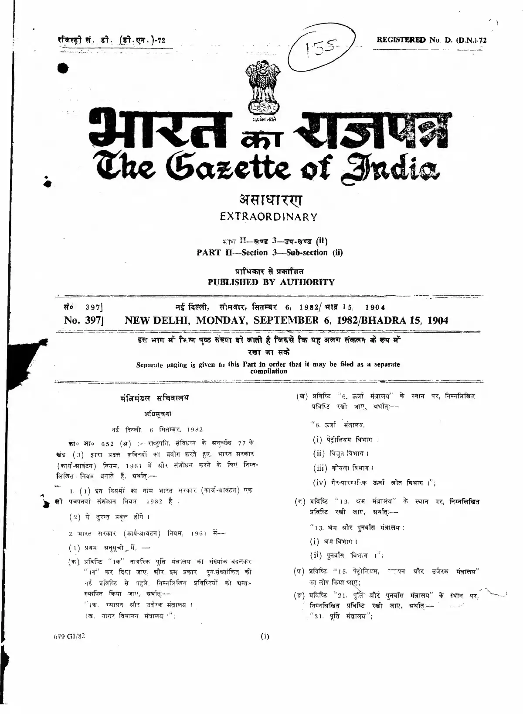
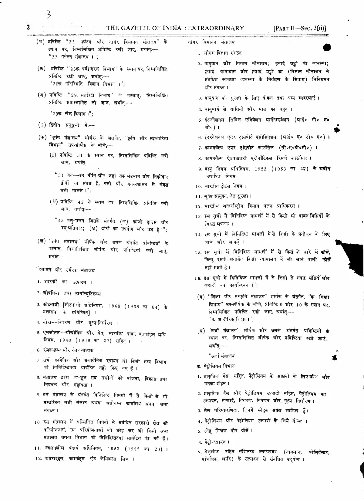
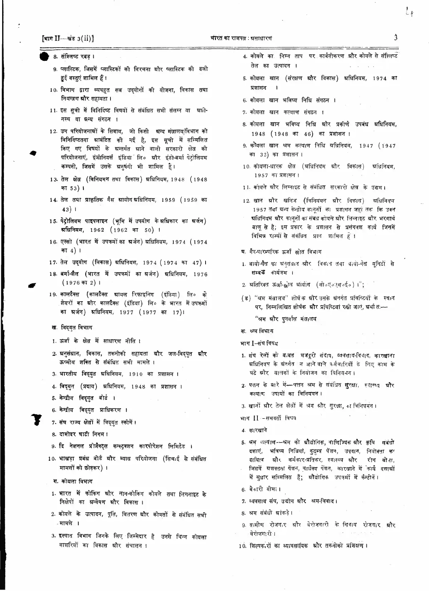
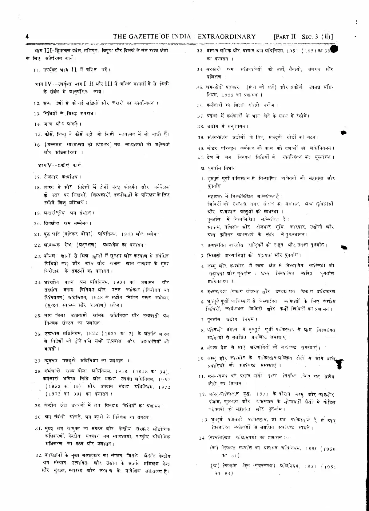
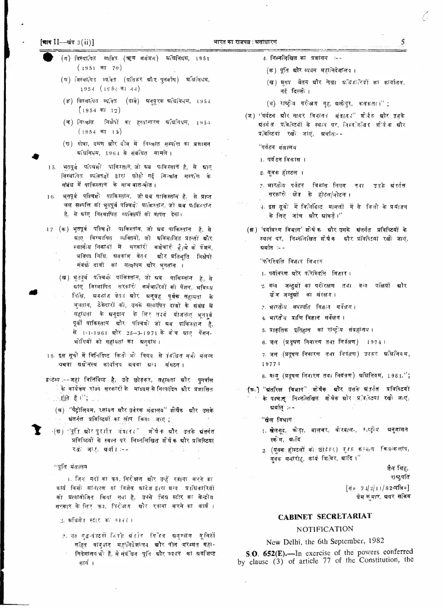
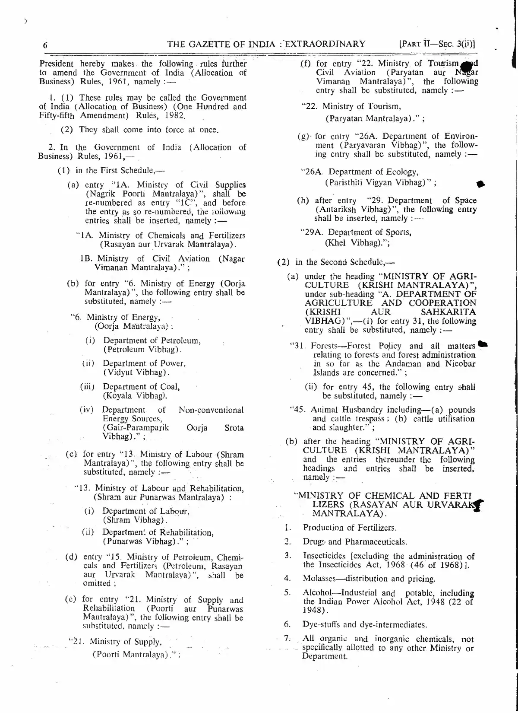
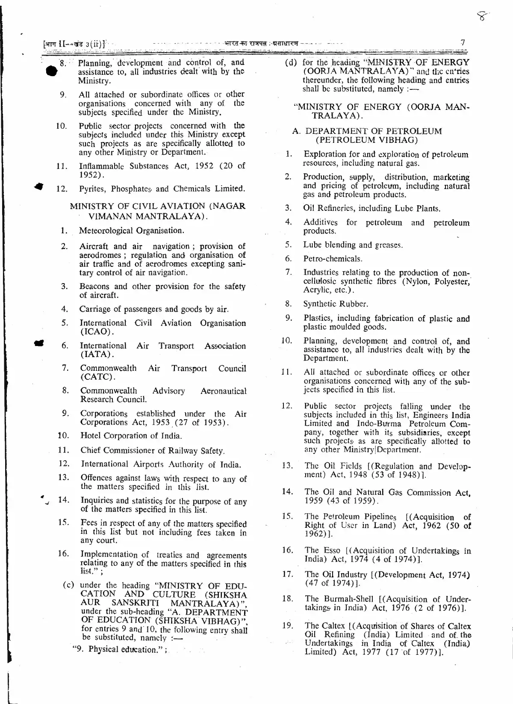
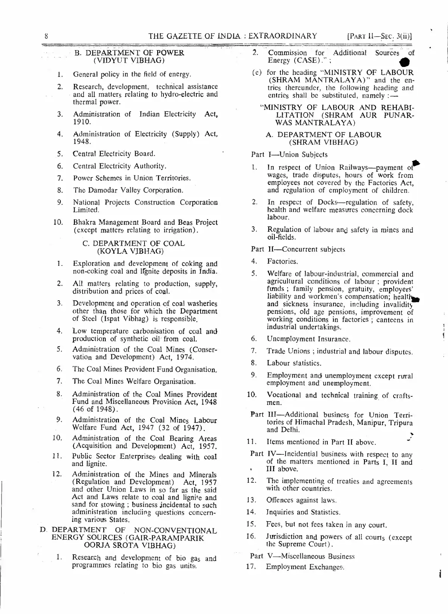
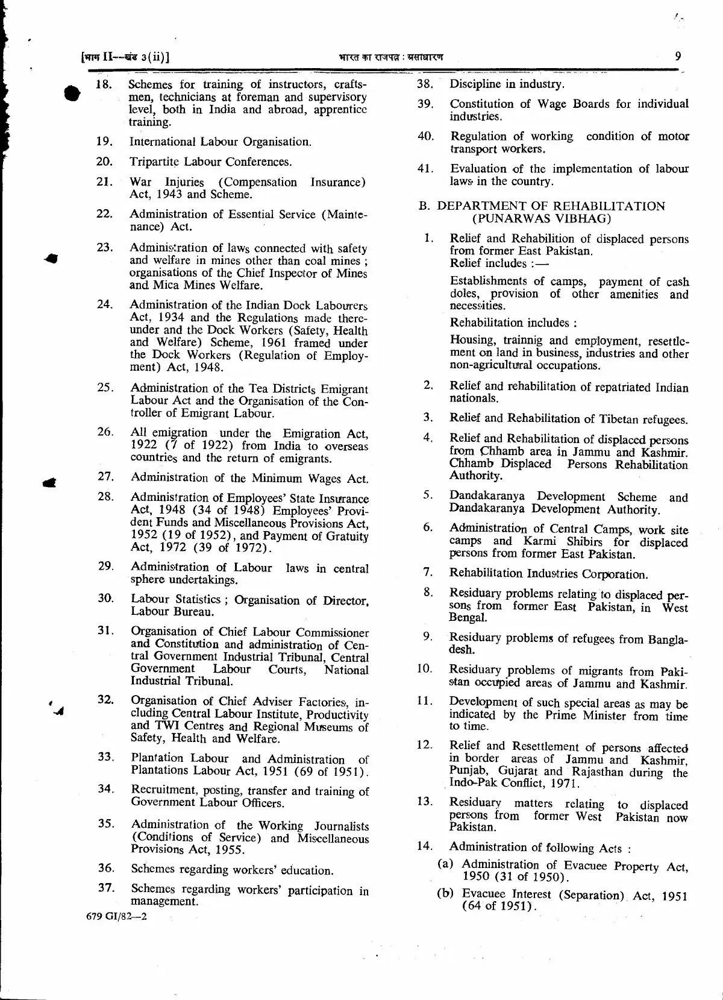
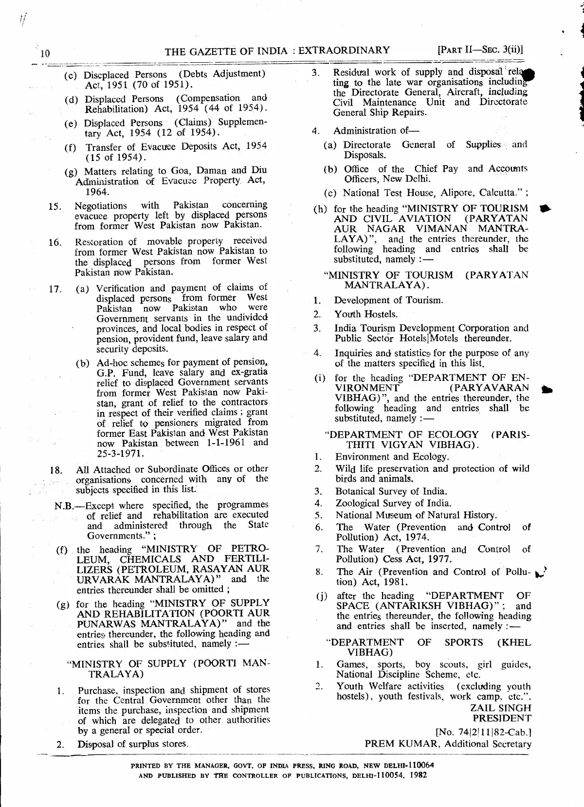

Amendment #155 (S.O. 652(E), 1982)
20 changes: 9 to the First Schedule, 11 to the Second Schedule. 19 applied1 not applied
What it did to the ministries
- bornDepartment of Sports is created (2 subjects) change 9, 20 · histories: Youth Affairs and Sports
- splitMinistry of Petroleum, Chemicals and Fertilizers splits into Ministry of Energy (18) and Ministry of Chemicals and Fertilizers (11) change 1, 2, 3, 5, 12, 14 · histories: Petroleum, Chemicals and Fertilizers, Energy, Chemicals and Fertilizers
- spun offMinistry of Tourism is separated from Ministry of Tourism and Civil Aviation (3 subjects) change 2, 7, 12, 18 · histories: Tourism and Civil Aviation, Tourism
- renamedMinistry of Tourism and Civil Aviation is renamed Ministry of Civil Aviation change 2, 7, 12 · histories: Tourism and Civil Aviation
- renamedMinistry of Labour is renamed Ministry of Labour and Rehabilitation change 4, 15 · histories: Labour and Employment
- renamedMinistry of Supply and Rehabilitation is renamed Ministry of Supply change 6, 17 · histories: Supply
- renamedDepartment of Environment is renamed Department of Ecology change 8, 19 · histories: Environment & Climate
- grewMinistry of Labour and Rehabilitation grows from 39 to 60 subjects change 4, 15 · histories: Labour and Employment
- shrankMinistry of Supply shrinks from 7 to 4 subjects change 6, 17 · histories: Supply
The order, page by page
Page 1 of 10

Page 2 of 10

Page 3 of 10

Page 4 of 10

Page 5 of 10

Page 6 of 10

123456789101112before Schedule 1 › entry 1C
- 1A. Ministry of Chemicals and Fertilizers
- 1B. Ministry of Civil Aviation
applied at schedule 1 › ministry 1A in the Rules after #155
new extra
Schedule 1 › entry 6
- 6. Ministry of Energy
- i. Department of Petroleum
- ii. Department of Power
- iii. Department of Coal
- iv. Department of Non-conventional Energy Sources
applied at schedule 1 › ministry 6 in the Rules after #155
Schedule 1 › entry 13
- 13. Ministry of Labour and Rehabilitation
- i. Department of Labour
- ii. Department of Rehabilitation
applied at schedule 1 › ministry 13 in the Rules after #155
Schedule 1 › entry 15
applied at schedule 1 › ministry 15 in the Rules after #155
Schedule 1 › entry 21
- 21. Ministry of Supply
applied at schedule 1 › ministry 21 in the Rules after #155
Schedule 1 › entry 22
- 22. Ministry of Tourism
applied at schedule 1 › ministry 22 in the Rules after #155
Schedule 1 › entry 26A
- 26A. Department of Ecology
applied at schedule 1 › department 26A in the Rules after #155
after Schedule 1 › entry 29
- 29A. Department of Sports
applied at schedule 1 › department 29A in the Rules after #155
Schedule 2 › MINISTRY OF AGRI- CULTURE › DEPARTMENT OF AGRICULTURE AND COOPERATION › entry 31
- 31. Forests--Forest Policy and all matters relating to forests and forest administration in so far as the Andaman and Nicobar Islands are concerned.
applied at schedule 2 › ministry Ministry of Agriculture › department A › part III › entry 31 in the Rules after #155
Schedule 2 › MINISTRY OF AGRI- CULTURE › DEPARTMENT OF AGRICULTURE AND COOPERATION › entry 45
- 45. Animal Husbandry including-(a) pounds and cattle trespass; (b) cattle utilisation and slaughter.
applied at schedule 2 › ministry Ministry of Agriculture › department A › part IV › entry 45 in the Rules after #155
after Schedule 2 › MINISTRY OF AGRI- CULTURE
- MINISTRY OF CHEMICAL AND FERTI LIZERS
- 1. Production of Fertilizers.
- 2. Drugs and Pharmaceuticals.
- 3. Insecticides [excluding the administration of the Insecticides Act, 1968 (46 of 1968)].
- 4. Molasses distribution and pricing.
- 5. Alcohol Industrial and potable, including the Indian Power Alcohol Act, 1948 (22 of 1948).
and 23 more
- 6. Dye-stuffs and dye-intermediates. 7: All organic and inorganic chemicals, not specifically allotted to any other Ministry or Department.
- 8. Planning, development and control of, and assistance to, all industries dealt with by the Ministry.
- 9. All attached or subordinate offices or other organisations concerned with any of the subjects specified under the Ministry.
- 10. Public sector projects concerned with the subjects included under this Ministry except such projects as are specifically allotted to any other Ministry or Department.
- 11. Inflammable Substances Act, 1952 (20 of 1952).
- 12. Pyrites, Phosphates and Chemicals Limited.
- MINISTRY OF CIVIL AVIATION
- 1. Meteorological Organisation.
- 2. Aircraft and air navigation; provision of aerodromes; regulation and organisation of air traffic and of aerodromes excepting sanitary control of air navigation.
- 3. Beacons and other provision for the safety of aircraft.
- 4. Carriage of passengers and goods by air.
- 5. International Civil Aviation Organisation (ICAO).
- 6. International Air Transport Association (IATA).
- 7. Commonwealth Air Transport Council (CATC).
- 8. Commonwealth Advisory Aeronautical Research Council.
- 9. Corporations established under the Air Corporations Act, 1953 (27 of 1953).
- 10. Hotel Corporation of India.
- 11. Chief Commissioner of Railway Safety.
- 12. International Airports Authority of India.
- 13. Offences against laws with respect to any of the matters specified in this list.
- 14. Inquiries and statistics for the purpose of any of the matters specified in this list.
- 15. Fees in respect of any of the matters specified in this list but not including fees taken in any court.
- 16. Implementation of treaties and agreements relating to any of the matters specified in this list.
applied at schedule 2 › ministry MINISTRY OF CHEMICAL AND FERTI LIZERS in the Rules after #155
read page break
Page 7 of 10

1314Schedule 2 › MINISTRY OF EDU- CATION AND CULTURE › DEPARTMENT OF EDUCATION › entry 9; Schedule 2 › MINISTRY OF EDU- CATION AND CULTURE › DEPARTMENT OF EDUCATION › entry 10
- 9. Physical education.
not applied (the change could not be placed in the Rules as read; see How this document was read)
Schedule 2 › MINISTRY OF ENERGY
- MINISTRY OF ENERGY (OORJA MAN- TRALAYA).
- A. DEPARTMENT OF PETROLEUM
- 1. Exploration for and exploration of petroleum resources, including natural gas.
- 2. Production, supply, distribution, marketing and pricing of petroleum, including natural gas and petroleum products.
- 3. Oil Refineries, including Lube Plants.
- 4. Additives for petroleum and petroleum products.
and 44 more
- 5. Lube blending and greases.
- 6. Petro-chemicals.
- 7. Industries relating to the production of noncellulosic synthetic fibres (Nylon, Polyester Acrylic, etc.).
- 8. Synthetic Rubber.
- 9. Plastics, including fabrication of plastic and plastic moulded goods.
- 10. Planning, development and control of, and assistance to, all industries dealt with by the Department.
- 11. All attached or subordinate offices or other organisations concerned with any of the subjects specified in this list.
- 12. Public sector projects falling under the subjects included in this list, Engineers India Limited and Indo-Burma Petroleum Company, together with its subsidiaries, except such projects as are specifically allotted to any other Ministry|Department.
- 13. The Oil Fields [(Regulation and Development) Act, 1948 (53 of 1948)].
- 14. The Oil and Natural Gas Commission Act 1959 (43 of 1959).
- 15. The Petroleum Pipelines [(Acquisition of Right of User in Land) Act, 1962 (50 of 1962)].
- 16. The Esso [(Acquisition of Undertakings in India) Act, 1974 (4 of 1974)].
- 17. The Oil Industry [(Development Act, 1974) (47 of 1974)].
- 18. The Burmah-Shell [(Acquisition of Undertakings in India) Act, 1976 (2 of 1976)].
- 19. The Caltex [(Acquisition of Shares of Caltex Oil Refining (India) Limited and of the Undertakings in India of Caltex (India) Limited) Act, 1977 (17 of 1977)].
- B. DEPARTMENT OF POWER
- 1. General policy in the field of energy.
- 2. Research, development, technical assistance and all matters relating to hydro-electric and thermal power.
- 3. Administration of Indian Electricity Act
- 1910.
- 4. Administration of Electricity (Supply) Act
- 1948.
- 5. Central Electricity Board.
- 6. Central Electricity Authority.
- 7. Power Schemes in Union Territories.
- 8. The Damodar Valley Corporation.
- 9. National Projects Construction Corporation Limited.
- 10. Bhakra Management Board and Beas Project (except matters relating to irrigation).
- C. DEPARTMENT OF COAL
- 1. Exploration and development of coking and non-coking coal and lignite deposits in India.
- 2. All matters relating to production, supply distribution and prices of coal.
- 3. Development and operation of coal washeries other than those for which the Department of Steel (Ispat Vibhag) is responsible.
- 4. Low temperature carbonisation of coal and production of synthetic oil from coal.
- 5. Administration of the Coal Mines (Conservation and Development) Act, 1974.
- 6. The Coal Mines Provident Fund Organisation.
- 7. The Coal Mines Welfare Organisation.
- 8. Administration of the Coal Mines Provident Fund and Miscellaneous Provision Act, 1948 (46 of 1948).
- 9. Administration of the Coal Mines Labour Welfare Fund Act, 1947 (32 of 1947).
- 10. Administration of the Coal Bearing Areas (Acquisition and Development) Act, 1957.
- 11. Public Sector Enterprises dealing with coal and lignite.
- 12. Administration of the Mines and Minerals (Regulation and Development) Act, 1957 and other Union Laws in so far as the said Act and Laws relate to coal and lignite and sand for stowing; business incidental to such administration including questions concerning various States.
- D. DEPARTMENT OF NON-CONVENTIONAL ENERGY SOURCES
- 1. Research and development of bio gas and programmes relating to bio gas units.
- 2. Commission for Additional Sources of Energy (CASE).
applied at schedule 2 › ministry MINISTRY OF ENERGY (0ORJA MANTRALAYA) in the Rules after #155
read page break
Page 8 of 10

15Schedule 2 › MINISTRY OF LABOUR
- MINISTRY OF LABOUR AND REHABI- LITATION
- A. DEPARTMENT OF LABOUR
- I. PART I
- 1. In respect of Union Railways-payment of wages, trade disputes, hours of work from employees not covered by the Factories Act and regulation of employment of children.
- 2. In respect of Docks-regulation of safety health and welfare measures concerning dock labour.
- 3. Regulation of labour and safety in mines and oil-fields.
and 69 more
- II. PART II
- 4. Factories.
- 5. Welfare of labour-industrial, commercial and agricultural conditions of labour; provident funds; family pension, gratuity, employers liability and workmen's compensation; health and sickness insurance, including invalidity pensions, old age pensions, improvement of i working conditions in…
- 6. Unemployment Insurance.
- 7. Trade Unions; industrial and labour disputes.
- 8. Labour statistics.
- 9. Employment and unemployment except rural employment and unemployment.
- 10. Vocational and technical training of craftsmen. Part III-Additional business for Union Territories of Himachal Pradesh, Manipur, Tripura and Delhi.
- 11. Items mentioned in Part II above. Part IV-Incidential business with respect to any of the matters mentioned in Parts I, II and , III above.
- 12. The implementing of treaties and agreements with other countries.
- 13. Offences against laws.
- 14. Inquiries and Statistics.
- 15. Fees, but not fees taken in any court.
- 16. Jurisdiction and powers of all courts (except the Supreme Court).
- V. PART V
- 17. Employment Exchanges.
- 18. Schemes for training of instructors, craftsmen, technicians at foreman and supervisory level, both in India and abroad, apprentice training.
- 19. International Labour Organisation.
- 20. Tripartite Labour Conferences.
- 21. War Injuries (Compensation Insurance) Act, 1943 and Scheme.
- 22. Administration of Essential Service (Maintenance) Act.
- 23. Administration of laws connected with safety and welfare in mines other than coal mines organisations of the Chief Inspector of Mines and Mica Mines Welfare.
- 24. Administration of the Indian Dock Labourers Act, 1934 and the Regulations made thereunder and the Dock Workers (Safety, Health and Welfare) Scheme, 1961 framed under the Dock Workers (Regulation of Employment) Act, 1948.
- 25. Administration of the Tea Districts Emigrant Labour Act and the Organisation of the Controller of Emigrant Labour.
- 26. All emigration under the Emigration Act 1922 (7 of 1922) from India to overseas countries and the return of emigrants.
- 27. Administration of the Minimum Wages Act.
- 28. Administration of Employees' State Insurance Act, 1948 (34 of 1948) Employees' Provident Funds and Miscellaneous Provisions Act 1952 (19 of 1952), and Payment of Gratuity Act, 1972 (39 of 1972).
- 29. Administration of Labour laws in central sphere undertakings.
- 30. Labour Statistics; Organisation of Director Labour Bureau.
- 31. Organisation of Chief Labour Commissioner and Constitution and administration of Central Government Industrial Tribunal, Central Government Labour Courts, National Industrial Tribunal.
- 32. Organisation of Chief Adviser Factories, including Central Labour Institute, Productivity and TWI Centres and Regional Museums of Safety, Health and Welfare.
- 33. Plantation Labour and Administration of Plantations Labour Act, 1951 (69 of 1951).
- 34. Recruitment, posting, transfer and training of Government Labour Officers.
- 35. Administration of the Working Journalists (Conditions of Service) and Miscellaneous Provisions Act, 1955.
- 36. Schemes regarding workers' education.
- 37. Schemes regarding workers' participation in management.
- 38. Discipline in industry.
- 39. Constitution of Wage Boards for individual industries.
- 40. Regulation of working condition of motor transport workers.
- 41. Evaluation of the implementation of labour laws in the country.
- B. DEPARTMENT OF REHABILITATION
- 1. Relief and Rehabilition of displaced persons from former East Pakistan. Relief includes: Establishments of camps, payment of cash doles, provision of other amenities and necessities. Rehabilitation includes: Housing, trainnig and employment, resettlement on land in business, industries and other…
- 2. Relief and rehabilitation of repatriated Indian nationals.
- 3. Relief and Rehabilitation of Tibetan refugees.
- 4. Relief and Rehabilitation of displaced persons from Chhamb area in Jammu and Kashmir. Chhamb Displaced Persons Rehabilitation Authority.
- 5. Dandakaranya Development Scheme and Dandakaranya Development Authority.
- 6. Administration of Central Camps, work site camps and Karmi Shibirs for displaced persons from former East Pakistan.
- 7. Rehabilitation Industries Corporation.
- 8. Residuary problems relating to displaced persons from former East Pakistan, in West Bengal.
- 9. Residuary problems of refugees from Bangladesh.
- 10. Residuary problems of migrants from Pakistan occupied areas of Jammu and Kashmir.
- 11. Development of such special areas as may be indicated by the Prime Minister from time to time.
- 12. Relief and Resettlement of persons affected in border areas of Jammu and Kashmir Punjab, Gujarat and Rajasthan during the Indo-Pak Conflict, 1971.
- 13. Residuary matters relating to displaced persons from former West Pakistan now Pakistan.
- 14. Administration of following Acts:
- a. Administration of Evacuee Property Act 1950 (31 of 1950).
- b. Evacuee Interest (Separation) Act, 1951 (64 of 1951).
- c. Discplaced Persons (Debts Adjustment) Act, 1951 (70 of 1951).
- d. Displaced Persons (Compensation and Rehabilitation) Act, 1954 (44 of 1954).
- e. Displaced Persons (Claims) Supplementary Act, 1954 (12 of 1954).
- f. Transfer of Evacuee Deposits Act, 1954 (15 of 1954).
- g. Matters relating to Goa, Daman and Diu Administration of Evacuee Property Act
- 1964.
- 15. Negotiations with Pakistan concerning evacuee property left by displaced persons from former West Pakistan now Pakistan.
- 16. Restoration of movable property received from former West Pakistan now Pakistan to the displaced persons from former West Pakistan now Pakistan.
- 17.
- a. Verification and payment of claims of displaced persons from former West Pakistan now Pakistan who were Government servants in the undivided provinces, and local bodies in respect of pension, provident fund, leave salary and security deposits.
- b. Ad-hoc schemes for payment of pension G.P. Fund, leave salary and ex-gratia relief to displaced Government servants from former West Pakistan now Pakistan, grant of relief to the contractors in respect of their verified claims; grant of relief to pensioners migrated from former East Pakistan and…
- 18. All Attached or Subordinate Offices or other organisations concerned with any of the subjects specified in this list. N.B. Except where specified, the programmes of relief and rehabilitation are executed and administered through the State Governments.
applied at schedule 2 › ministry MINISTRY OF LABOUR in the Rules after #155
read page break
Page 9 of 10

Page 10 of 10

1617181920Schedule 2 › MINISTRY OF PETRO- LEUM, CHEMICALS AND FERTILI- LIZERS
applied at schedule 2 › ministry in the Rules after #155
states inferred loose
Schedule 2 › MINISTRY OF SUPPLY AND REHABILITATION
- MINISTRY OF SUPPLY (POORTI MAN- TRALAYA)
- 1. Purchase, inspection and shipment of stores for the Central Government other than the items the purchase, inspection and shipment of which are delegated to other authorities by a general or special order.
- 2. Disposal of surplus stores. PRINTED BY THE MANAGER, GOVT. OF INDIA
- 3. Residual work of supply and disposal rela ting to the late war organisations including the Directorate General, Aircraft, including Civil Maintenance Unit and Directorate General Ship Repairs.
- 4. Administration of-
- a. Directorate General of Supplies and General Disposals.
and 2 more
- b. Office of the Chief Pay and Accounts Officers, New Delhi.
- c. National Test House, Alipore, Calcutta.
applied at schedule 2 › ministry MINISTRY OF SUPPLY AND REHABILITATION in the Rules after #155
read page break
Schedule 2 › MINISTRY OF TOURISM AND CIVIL AVIATION
- MINISTRY OF TOURISM
- 1. Development of Tourism.
- 2. Youth Hostels.
- 3. India Tourism Development Corporation and Public Sector Hotels | Motels thereunder.
- 4. Inquiries and statistics for the purpose of any of the matters specified in this list.
applied at schedule 2 › ministry MINISTRY OF TOURISM & CIVIL AVIATION in the Rules after #155
Schedule 2 › DEPARTMENT OF EN- VIRONMENT
- DEPARTMENT OF ECOLOGY (PARIS- THITI VIGYAN VIBHAG).
- 1. Environment and Ecology.
- 2. Wild life preservation and protection of wild birds and animals.
- 3. Botanical Survey of India.
- 4. Zoological Survey of India.
- 5. National Museum of Natural History.
and 3 more
- 6. The Water (Prevention and Control of Pollution) Act, 1974.
- 7. The Water (Prevention and Control of Pollution) Cess Act, 1977.
- 8. The Air (Prevention and Control of Pollution) Act, 1981.
applied at schedule 2 › department DEPARTMENT OF ENVIRONMENT in the Rules after #155
after Schedule 2 › DEPARTMENT OF SPACE
- DEPARTMENT OF SPORTS
- 1. Games, sports, boy scouts, girl guides National Discipline Scheme, etc.
- 2. Youth Welfare activities (excluding youth hostels), youth festivals, work camp, etc.
applied at schedule 2 › ministry DEPARTMENT OF SPORTS in the Rules after #155
How this document was read
Edits to the reading
| Date | By | Edit | Before → after |
|---|---|---|---|
| 12 November 2026 | claude | word corrected | |
| 12 November 2026 | claude | word corrected |
Changes placed by an inference rule
| Change | Rule | Status | What |
|---|---|---|---|
| 16 | loose | accepted | change 16: ministry MINISTRY OF PETRO- LEUM, CHEMICALS AND FERTILI- LIZERS taken for ministry MINISTRY OF PETROLEUM, CHEMICALS AND FERTILIZERS, named loosely |
Known issues
| Change | Issue | Known as |
|---|---|---|
| 13 | change 13: no entry 10 under schedule 2 › ministry MINISTRY OF EDUCATION AND CULTURE (SHIKSHA AUR SANSKRITI MANTRA- LAYA) › department A | Entries not in the state |
From the Government of India (Allocation of Business) Rules, 1961 and their amendments, as published by the Cabinet Secretariat (cabsec.gov.in), read by orgpedia. The readings of the older scanned gazettes have known gaps.